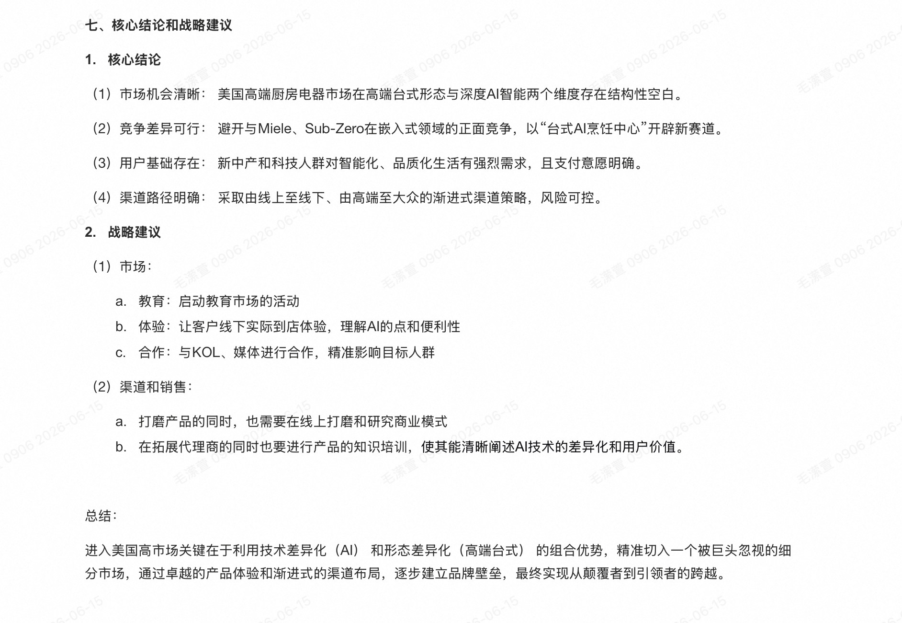
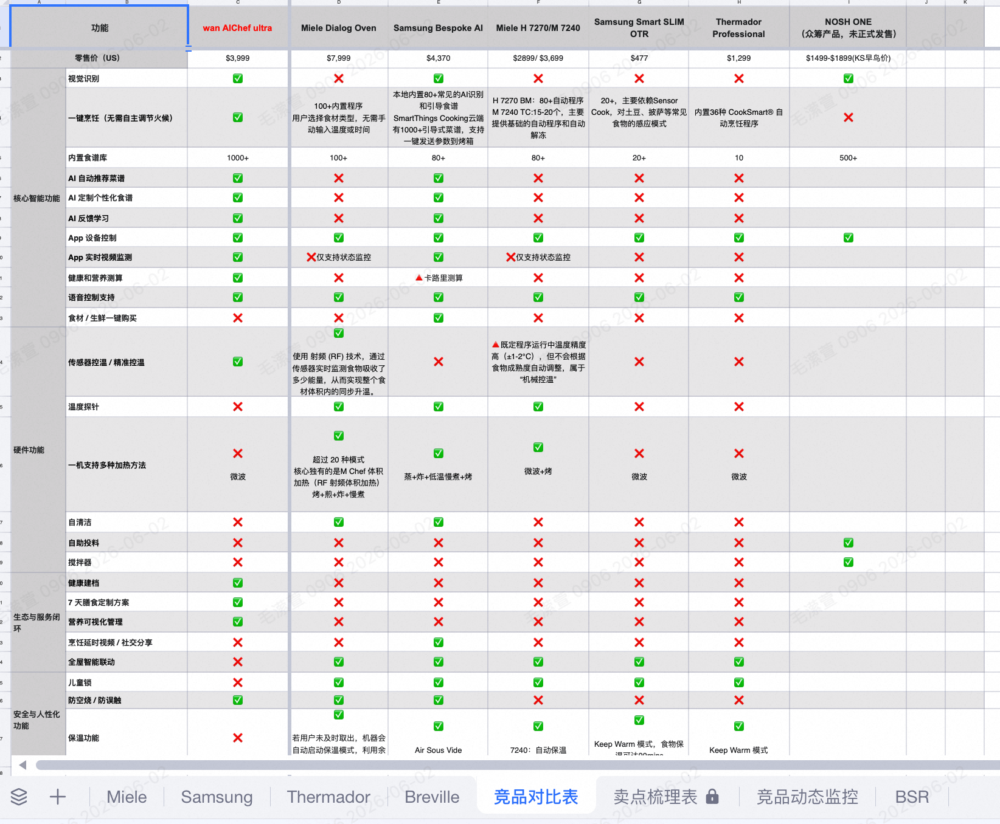
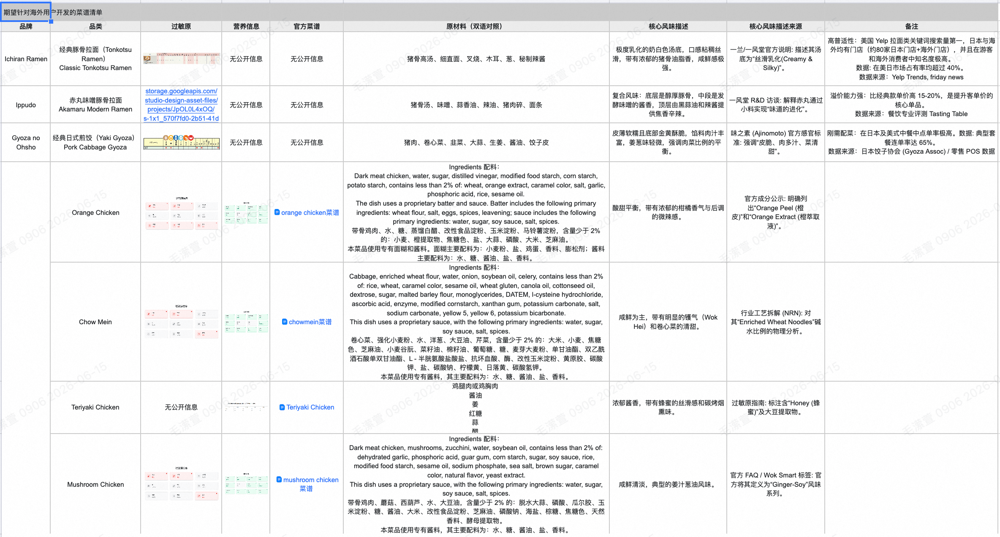
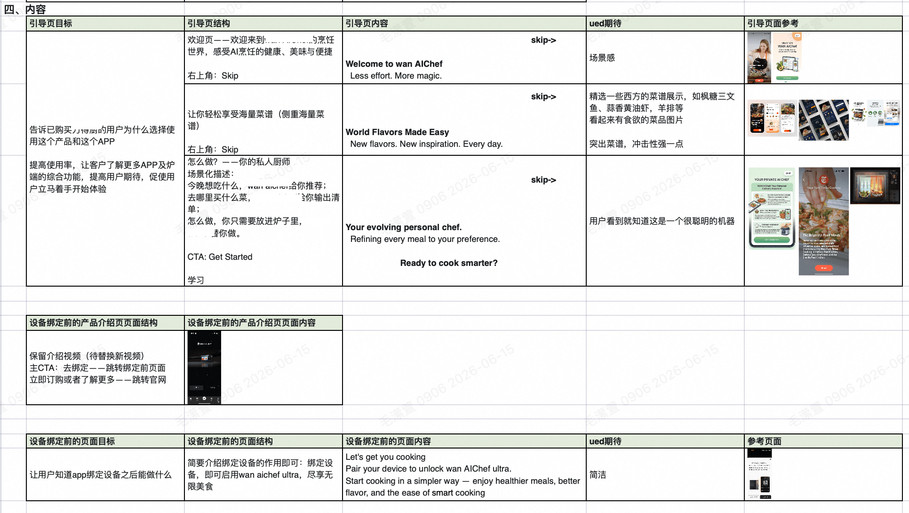
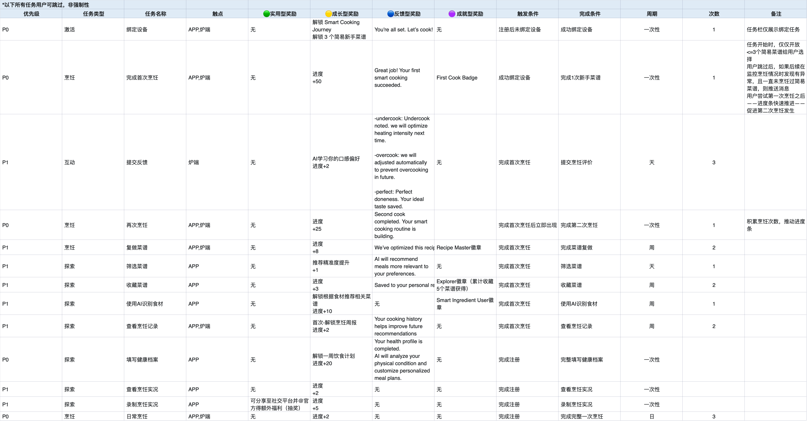
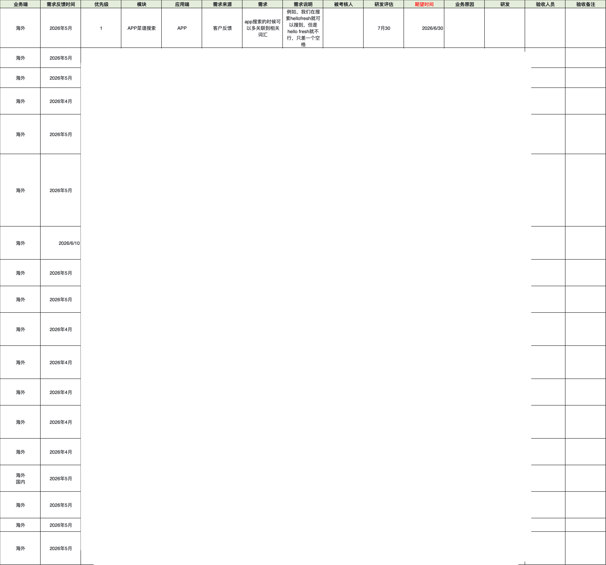
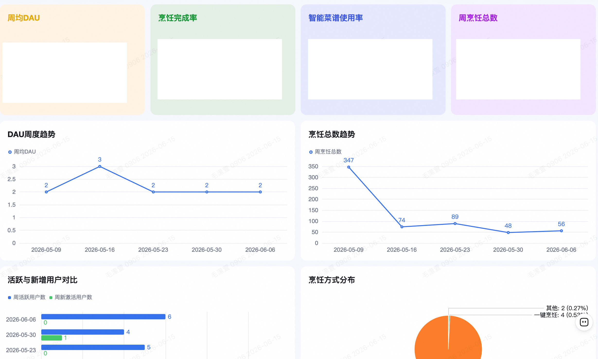
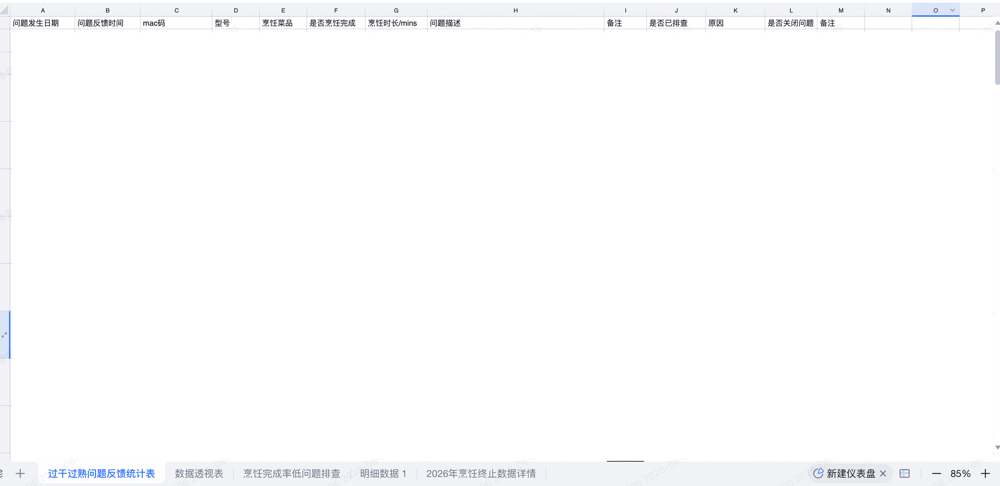

👋 毛潆萱 Yolanda
主导B端智能零售终端从0到1定义，负责C端智能厨电海外本地化。 擅长通过实地调研、竞品分析、用户旅程捕捉本地化机会，并依托需求管理、数据监控、问题闭环推动产品持续迭代。
🌍 产品本地化能力
从海外市场实地调研、本地口味研究、竞品对标，到用户体验地图与产品功能规划，形成完整的本地化产品闭环。
🇺🇸 美国渠道走访

实地走访高端、大众、电商三大渠道，输出渠道分层、产品形态空白、AI智能趋势等核心结论，制定分阶段进入策略。
📊 竞品功能全景对比

覆盖5大竞品，从核心智能、硬件、生态、安全等维度全面对比，明确自身差异化优势（视觉识别、AI学习、健康测算等）。
📱 海外APP竞品调研

分析6款海外APP的功能架构、注册方式、用户评价，提炼可参考功能清单，为海外独立APP规划提供输入。
🇺🇸🇯🇵 北美+日本食材供应链

深入调研美日市场经典菜系（拉面、Panda Express等），输出15+道本地化菜品清单、原材料及风味拆解，赋能食谱开发与供应链决策。
🗺️ 用户体验地图

完整绘制Pre-purchase到Retention全旅程，识别5大核心痛点，输出20+项优化机会，推动产品体验升级。
🎨 引导页与绑定页设计

设计欢迎页、引导页、设备绑定前介绍页，以场景化叙述降低用户教育成本，提升绑定转化率。
🏆 新手任务体系

设计13项新手任务（激活、烹饪、探索、互动），配合进度条与里程碑奖励，驱动用户首次及二次烹饪，提升留存。
🔄 全链路闭环能力
从需求管理、研发排期跟进，到数据监控、专项问题排查，形成「发现问题→推动解决→验证效果」的完整闭环。
📋 研发需求排期表

月度输出8+项产品需求，明确模块、来源、期望时间，协同研发评估排期，推动核心功能落地。
📊 周度运营数据追踪

搭建周度DAU、烹饪完成率、智能菜谱使用率等核心指标看板，监控趋势并识别异常波动，驱动运营决策。
🐞 专项问题排查

建立问题标签体系，针对「过干过熟」「烹饪终止」等专项问题，联动研发排查根因，形成闭环解决机制。
📬 联系我
📧 maoyingxuan01@163.com
💼 GitHub：github.com/yolanda01-716
🌐 作品集：yolanda01-716.github.io